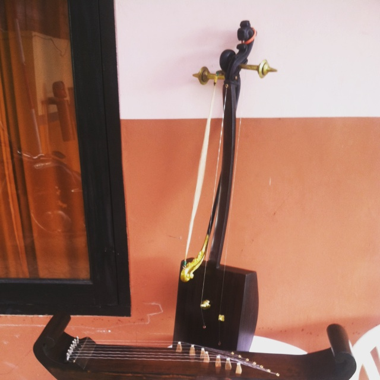

Tarawangsa adalah salah satu kesenian tradisional Sunda yang berasal dari daerah Sumedang. Instrumen ini dimainkan dengan cara digesek, mirip biola, dan biasanya dipadukan dengan alat musik Jentreng. Tarawangsa sering digunakan dalam upacara adat seperti Ruwatan atau Mapag Sri sebagai bentuk penghormatan kepada Dewi Sri, simbol kesuburan dan kemakmuran.
Tarawangsa merupakan salah satu jenis kesenian rakyat yang ada di kalangan masyarakat Sunda. Istilah "Tarawangsa" sendiri memiliki dua pengertian: (1) alat musik gesek yang memiliki dua dawai yang terbuat dari kawat baja atau besi dan (2) nama dari salah satu jenis musik tradisional Sunda. Dalam suasana sakral, alunan musik Tarawangsa dipercaya dapat menghubungkan manusia dengan leluhur dan alam semesta. Suara lembutnya menciptakan rasa khidmat, dan sering dianggap membawa ketenangan bagi siapa saja yang mendengarkannya. Hingga kini, Tarawangsa masih diajarkan oleh para seniman tradisi Sumedang agar tidak hilang ditelan zaman.
Sebagai alat musik gesek, tarawangsa tentu saja dimainkan dengan cara digesek. Akan tetapi yang digesek hanya satu dawai, yakni dawai yang paling dekat kepada pemain; sementara dawai yang satunya lagi dimainkan dengan cara dipetik dengan jari telunjuk tangan kiri. Kemudian, sebagai nama salah satu jenis musik, tarawangsa merupakan sebuah ensambel kecil yang terdiri dari sebuah tarawangsa dan sebuah alat petik tujuh dawai yang menyerupai kecapi, yang disebut Jentreng.
Alat musik tarawangsa dimainkan dalam laras pelog, sesuai dengan jentrengnya yang distem ke dalam laras pelog. Demikian pula repertoarnya, misalnya tarawangsa di Rancakalong terdiri dari dua kelompok lagu, yakni lagu-lagu pokok dan lagu-lagu pilihan atau lagu-lagu tambahan, yang semua berlaraskan pelog. Lagu pokok terdiri dari lagu Pangemat/pangambat, Pangapungan, Pamapag, Panganginan, Panimang, Lalayaan dan Bangbalikan. Ketujuh lagu tersebut dianggap sebagai lagu pokok, karena merupakan kelompok lagu yang mula-mula diciptakan dan biasa digunakan secara sakral untuk mengundang Dewi Sri. Sedangkan lagu-lagu pilihan atau lagu-lagu yang tidak termasuk ke dalam lagu pokok terdiri dari Saur, Mataraman, Iring-iringan (Tonggeret), Jemplang, Limbangan, Bangun, Lalayaran, Karatonan, Degung, Sirnagalih, Buncis, Pangairan, Dengdo, Angin-angin, Reundeu, Pagelaran, Ayun Ambing, Reundeuh Reundang, Kembang Gadung, Onde, Legon (koromongan), dan Panglima.
Lagu-lagu Tarawangsa di Rancakalong jauh lebih banyak jumlahnya daripada lagu-lagu Tarawangsa di Banjaran dan Cibalong. Lagu-lagu Tarawangsa di Banjaran di antaranya terdiri dari Pangrajah, Panimang, Bajing Luncat, Pangapungan, Bojong Kaso, dan Cukleuk. Sementara lagu-lagu Tarawangsa di Cibalong di antaranya terdiri dari Salancar, Ayun, Cipinangan, Mulang, Manuk Hejo, Kang Kiai, Aleuy, dan Pangungsi.
Pemain tarawangsa hanya terdiri dari dua orang, yaitu satu orang pemain tarawangsa dan satu orang pemain jentreng. Semua Pemain Tarawangsa terdiri dari laki-laki, dengan usia rata-rata 50 – 60 tahunan. Mereka semuanya adalah petani, dan biasanya disajikan berkaitan dengan upacara padi, misalnya dalam ngalaksa, yang berfungsi sebagai ungkapan rasa syukur kepada Tuhan atas hasil panen yang melimpah. Dalam pertunjukannya ini biasanya melibatkan para penari yang terdiri dari laki-laki dan perempuan. Mereka menari secara teratur. Mula-mula Saehu/Saman (laki-laki), disusul para penari perempuan. Mereka bertugas ngalungsurkeun (menurunkan) Dewi Sri dan para leluhur. Kemudian hadirin yang ada di sekitar tempat pertunjukan juga ikut menari. Tarian tarawangsa tidak terikat oleh aturan-aturan pokok, kecuali gerakan-gerakan khusus yang dilakukan Saehu dan penari perempuan yang merupakan simbol penghormatan bagi dewi padi. Menari dalam kesenian Tarawangsa bukan hanya merupakan gerak fisik semata-mata, melainkan sangat berkaitan dengan hal-hal metafisik sesuai dengan kepercayaan si penari.
⬅ Kembali ke Sejarah & Budaya